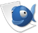
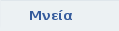
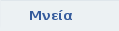

Σχεδίαση
 |
Blender
Το Blender είναι ένα προηγμένο πρόγραμμα δημιουργίας τρισδιάστατων γραφικών, ιδανικό για παραγωγή υψηλής ποιότητας animation, αποδοτικό rendering, post-production, διαδραστικές δημιουργίες και playback. Είναι η μοναδική εφαρμογή δημιουργίας τρισδιάστατων γραφικών που επιτρέπει στον δημιουργό να εξάγει το τελικό προϊόν σε ένα πακέτο μικρότερο των 10 MB. |
|
Dia
Το Dia μπορεί να χρησιμοποιηθεί στη σχεδίαση ποικιλόμορφων διαγραμμάτων σύμφωνα με τις ανάγκες σας, όπως μοντέλα, UML διαγράμματα, στατιστικά, δικτυακά διαγράμματα και απλά κυκλώματα. |
 |
GIMP
Το GIMP (ή GNU Image Manipulation Program) είναι ιδανικό για αυτούς που θέλουν να επεξεργαστούν ψηφιακές εικόνες, να σχεδιάσουν και να εξάγουν γραφικά για web, να μετατρέψουν εικόνες από ένα format σε άλλο, ή ακόμη και την παραγωγή πολύπλοκων συνθέσεων υψηλής ανάλυσης για εκτύπωση. |
|
Inkscape
Το Inkscape είναι ένας εύκολος στη χρήση επεξεργαστής ανυσματικών (vector) γραφικών που χρησιμοποιεί το format Scalable Vector Graphics (SVG). Οι δυνατότητες που υποστηρίζει το SVG μεταξύ άλλων είναι η δημιουργία σχημάτων, διαδρομών, κειμένου, κλώνων, alpha blending, μετατροπή, γεμίσματα με ντεγκραντέ και την ομαδοποίηση.
|
|
KompoZer
Το KompoZer είναι ένα πλήρες σύστημα δημιουργίας ιστοσελίδων που συνδυάζει διαχείριση αρχείων και έναν εύκολο στη χρήση WYSIWYG επεξεργαστή ιστοσελίδων. Το KompoZer είναι σχεδιασμένο για να είναι εξαιρετικά εύκολο στη χρήση του, κάνοντάς το ιδανικό για μη-τεχνικά καταρτισμένους χρήστες H/Y που θέλουν να δημιουργήσουν μια ελκυστική και επαγγελματικής όψης ιστοσελίδα χωρίς να χρειάζονται να γνωρίζουν HTML ή web κώδικα.
|
|
Scribus
Το Scribus είναι μια επαγγελματική εφαρμογή DTP (desktop publishing) που διαθέτει και εξαγωγή σε έτοιμη εκτυπώσιμη μορφή. Με το Scribus μπορείτε να δημιουργήσετε οτιδήποτε μπορείτε να φανταστείτε, από φυλλάδια, περιοδικά, αφίσες, ακόμη και βιβλία!
|
|  |
Bluefish Editor
O Bluefish Editor είναι ένα ισχυρό πρόγραμμα επεξεργασίας που απευθύνεται σε προγραμματιστές και web-designers, με πολλές επιλογές για την δημιουργία ιστοσελίδων, script και κώδικα προγραμματισμού. Ο Bluefish υποστηρίζει πολλές γλώσσες προγραμματισμού και μπορεί να χρησιμοποιηθεί για ανάπτυξη δυναμικών και διαδραστικών ιστοσελίδων. Πρόκειται για ένα έργο ανοικτού κώδικα, που διατίθεται βάσει της άδειας GNU GPL. |
| |
Έκδοση - 1.2.0 | Ένωση Ελλήνων Χρηστών και Φίλων ΕΛ/ΛΑΚ (GreekLUG)
|
|


 
